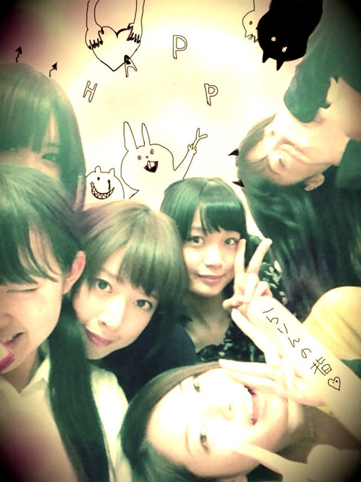
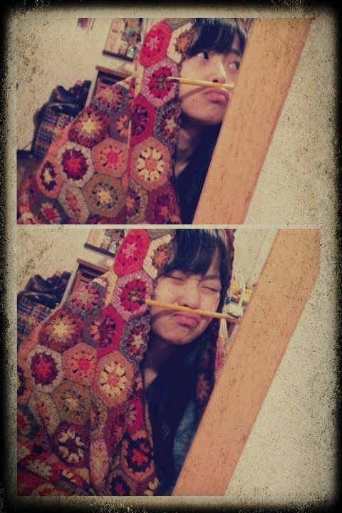
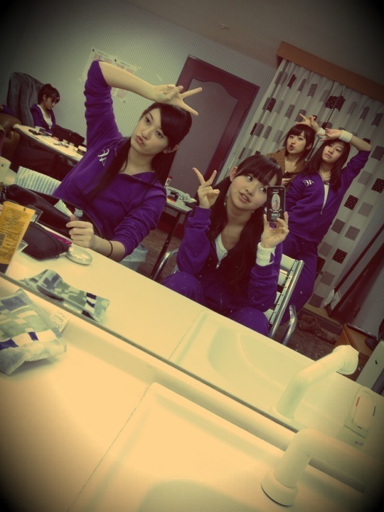
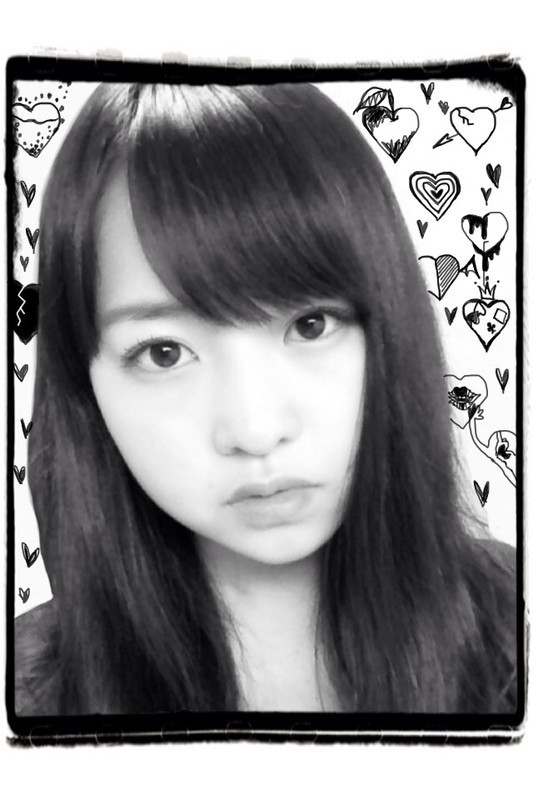
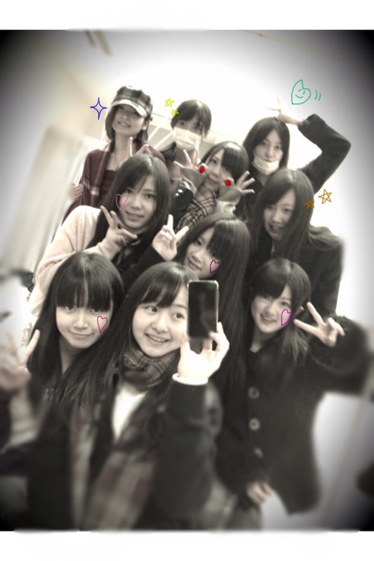
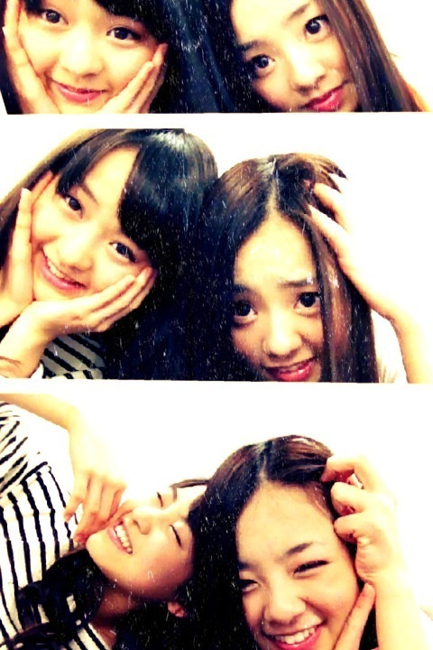
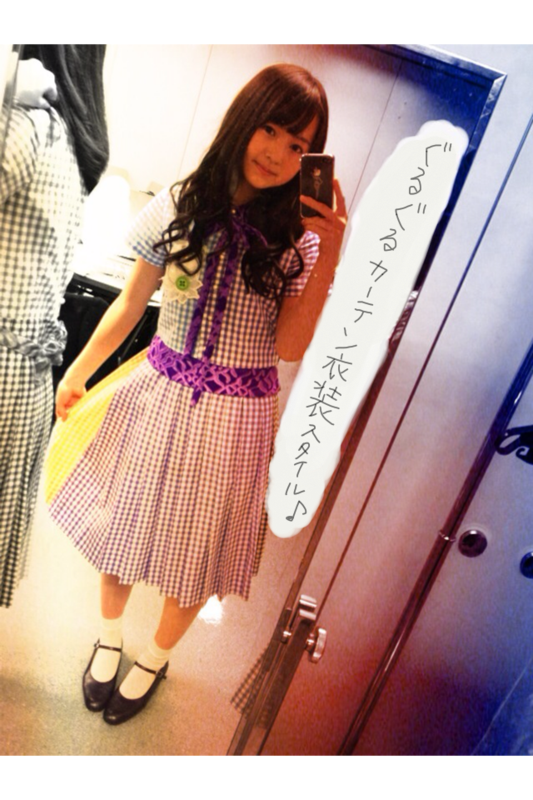
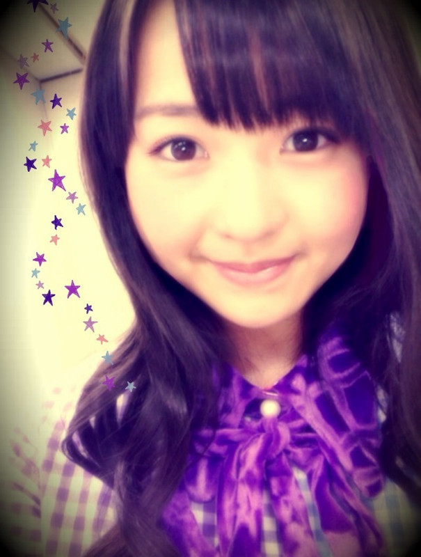
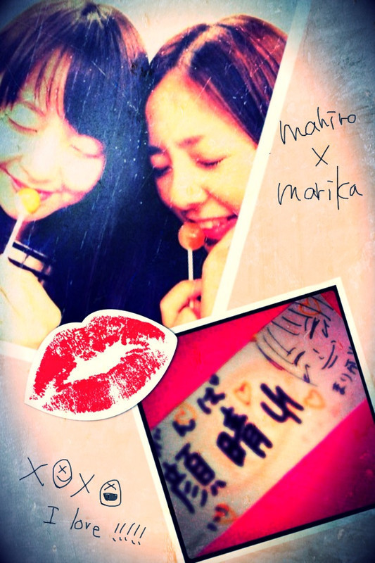
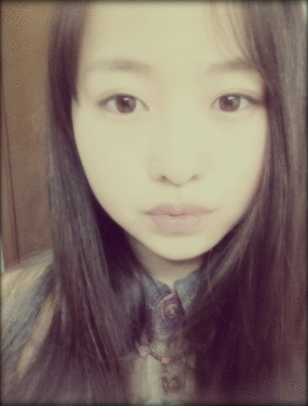

2012/0210Fri72回目*marika
いつも読んでくださってる方、
初めて読んでくださった方、
コメントしてくださった方、
ありがとうございます:D

せいたん、私、ななみん、まいまい、
ゆみ姉、みさみさ、らりんの指♡
...........................
・俺、朝起きると先ず洗濯物をエアコンで
乾かすんだけど、ベビたんは朝起きると
最初に何やりますか？
*****
目が覚めたらその場ですんごい伸びます。
そんときにすんごい声が出ます。
「んんんぬううぅあああぁぁ（あくび）」
身長伸びますように...てやってます笑
・まさかだと思うけど、まりちゃんも
さばドルだったりしないよね？www
*****
いや...それはちょっと言えないです。←えぇ
まっまさか!!
自分が中学生な訳ないですよ!!!!
・まりちゃんの趣味、好きなこと又は
こんな話しするとテンション上がる！
って言うのってあるかな？
握手会の話しネタの参考にしたいです(^^ゞ
*****
BloGのこととか...?
どんなお話でもいいですよ^^*
だって会えるだけでうれしいもん:D!!
・べびたんどんなケーキが好き？
*****
いい?多いよ?
ミルクレープ、いちごいっぱいの、フルーツいっぱいの
チーズケーキ、チョコレートの...
ケーキはなんでもいける〜♪ふんふふん
・おでこ撫でたいですううう！←
握手会で触らせてくれますか？(笑)
*****
友達によくデコぴんされてたぁxO
おでこもほっぺも鼻もだね^^笑
多いね...!!
・写真に落書きするときは
指で書いてる？ペンで書いてる？
・ばぶたんの落書きってめっちゃ細かいけど
なんかスマホ用のペンとか使ってる？
まさか指？？
*****
まさかの指ですー!!ぱんぱかぱーん
でも、あれなの。
写真を限界までアップにして描けるから
細かいのも指で余裕に描けちゃうの^^
最近のケータイってのは便利よね。
・マリオカートはベビーマリオ使ってるｗ
キャラクターは何使うの－？
得意なコースあるー？
*****
きのこ頭の子をよく選んでます:D
ノーマルなコースしか.....←←
・ベビたんの他に、ニックネーム付けて良いかな!?
*****
えっうれしいな〜＊
現時点ではベビたん意外にも
沢山のあだなが存在してます:^)!!
・イライラした時、ムカついたときは
どうやってストレス解消してるの?(´Д｀)
*****
私は溜め込みたくないので親友に電話します*
ダンス踊るとストレス発散!!とかも。
あと....
ぬいぐるみにやつあた ......
・コメのＵＲＬ書くとこって
記入してたら何かあるの？
*****
何が起きるのかはわ足しにもさっぱり....x(
・乃木坂４６は、今年はＡＫＢの総選挙に出るんですか？
*****
ライバルだから....
出ないのでは??と私は思います!!
・万理ちゃんは
ﾁｮｺとﾁｮｺ以外のもの(ｸｯｷｰとか)
どっちが好きですか？
*****
チョコすき〜♡
ビターチョコすきです^^
チョコ以外なら
クッキーとかせんべいとか笑
・「ベビ」はカタカナが良いのか平仮名なのか？？？
それとも「万理華」がいい？？？
*****
私最初の頃から『ベビたん』て書いちゃってて...
本当はどっちでも良いんですよ××;
そんなに深いこだわりはないから....
みなさんのすきな方でお願いします♪
もちろん『万理華』もうれしっ♡
・ベビたん抹茶の豆乳
飲んだことありますか^^？
*****
そっそれって最高の組み合わせじゃないの...!!
飲んだことあるような気がする。
また飲みたい〜**
・ベビたんが阪神タイガースを
応援しているそうだけど、好きな選手は誰かな？
*****
好きな選手....
全員応援してます:)
・ぐるカーの振り付けで
難しいところ、気に入ってるところってどこかな？
*****
サビで一列になって踊るのは難しいです><
でも一番すきなところはやっぱりサビの部分よね♡
昨日みゅみゅに
「ぐるぐる踊ってるまりかって超笑顔だよね」
て言われました^^
そのくらいぐるぐるカーテンめっちゃすきなんです!!
・まりちゃんってみんなにいじられてない？
まりちゃんからちょっかい出すような子いる？
*****
たぶん自分はかまってちゃんやから
近くにいるメンバーにちょっかい出すけども
最終的に私がいじられる,....笑
・俺、男子校に通ってるんだけど
男子校ってどういうイメージ？
*****
スポーツに燃えてそうなイメージ:Dきらきら
・早くベビたんに逢いたいのですが、
どうしたら耐えられますか？？
*****
私も早く乃木坂familyに会いたいよーx(♡
会いたくてうずうず〜....
かもしれない ♪
もうちょいだっ!!
待っててくださいね**
・まりかちゃんの推しメンは誰ですか？？
・まりかちゃんって推しメンとかいますか？？
*****
乃木メンは決められないね><
みーんなかわいいし、良い子やし、
優しいし......
48グループは研究中です !!
・バレエではどの作品を踊ったことがある？
*****
最後に踊ったのは
ドンキホーテのキューピットです。＊
また踊りたいな...
・前のブログで絵描く事が
特技のひとつって教えてくれたけど、
ロゴとか描ける？
*****
レタリング描くのめっちゃすきだったりします!!
じゃあ今度ロゴ描いたんぽ載せよっ☆
・ファンレター送っていいのかな？
もしよかったら宛先教えて下さい♡
*****
〒102-8353
東京都千代田区六番町4番地5
「乃木坂46運営事務局」宛
にお願いします♡
うれしすぎる...!!
ありがとうございますっっ
・メンバーの中でよく一緒にいるのは？
*****
みんなと仲良いんでしけど...
同い年メンは特に仲良いかなあ?
普段よく遊ぶんはねねとまひろ♡
おねえちゃんともお話しするし、
JCとも話すし....
ん〜...
全員やっ♡♡
・携帯なくなったヽ(；▽；)ノ
まぢで最悪
べびたん携帯なくなったらどうするー？←立派な質問！(笑)
なぐさめのお言葉ください(ToT)
*****
私もケータイを無くしたことあります。
探しまくって...そしたら奇跡的に見つかったんです!!
でも、探しても探して見つからなかったら
それは、もうそのケータイとバイバイしなだめだったんです。
ケータイも寂しいと思う。
長くつきあってくれてありがとう
の意味なんです!!
だから次のケータイと
無くさないって約束しよう。
もっと大事にするって約束しよう＊
そしたらもう次は大丈夫!!
・まりちゃんはスパゲティは何が好き⁇
*****
ジェノベーゼ、梅とおじゃこ、ミートソース
チーズいっぱいの、トマトいっぱいの
がすきです=3
・前に答えてくれてたかもしれないけど、
好きなディズニーのキャラクターは??(^ω^)
*****
バンビ、ダンボ、
モンスターズインク、トイストーリー
すき♡
・まりかちゃんはバレンタインに
チョコとか作ったりしますか？
私は友達に作ります
*****
meijiのちょっこれいとで♪
日頃感謝してるみんなに
渡したいと思ってます＊
....みなさんにも愛のこもった
ちょっこれいとを食べてほしいな
て思ってます**
渡したいな〜...
・べびたん体柔らかい？
*****
バレエやってたから柔らかい方だと思います!!
せっちゃんとストレッチしてるん楽しい♪
...........................
実は昨日記事書いてたのに
1回全部消してしまったんですよ; ;
消えた瞬間
ううううぅわーーーー
なんでここまできて消えるんじゃあー
となってました。
おまたせしてしまってごめんね><
では今日も頑張りまりか☆☆

ベビたん*****bA by marika
2012/0209Thu71回目*marika
いつも読んでくださってる方、
初めて読んでくださった方、
コメントしてくださった方、
ありがとうございます♪
久しぶりに更新した気が...><
遅くなってごめんね><
*****HaPPy BirThDAy*****
かずみ♡2012.2.8
おめでとうううぅ:D
みんなにものまねさせて
いじられちゃうよね。
いつもいつも優しくて
トークをまとめるのが上手くて
おもしろくて
歌うときはセクシーなかずみ♡
だいすき---!!!きゃ
かずみにとって素敵な一年になりますように.....
Music Lovers
れなのアンダーとして出演させていただきました。
前回、GIRLS'FACTORYで
初めて舞台で踊ったとき、
学んだことを生かして
楽しく踊ることができました＊
でも、また課題も見つかって。
トークや表現、カメラへアピール
これから必要になる、
TVでは当たり前のことが
難しかったです。
次も出たい。
踊りたい!!
努力!感謝!笑顔!***
来てくださったみなさん
ありがとうございました♪
乃木どこの公開収録楽しみっっ
収録後ねねちゃんとね、合流して
ご飯食べに行きました^^
うっはー楽しかった。
スパゲッティーの和風のさっぱり感が
とてもとてもとてもおいしかった〜♪
ねねに大人っぽいて言われてでれでれ←←
ねねと一緒にいると
自然とボケてしまいますなんでか。
ツッコみ入る笑!!
まひろとはまた違った空気ですねん**
いやー乃木坂充実^^☆☆
楽屋でお弁当食べてたら
遠くからあみとかずみとまいやんに笑われてたの。
....気づかんかった。
食べ方おもしろいって笑
あみ「あんたぁおいしそうに食べるよね〜」
:-)
口開ける瞬間まゆげが上がるそう。
ちょいちょい。
なんもおもしろくないけどもっ笑
まゆげぎゅいいいぃん ↑↑
＊＊＊
『乃木坂の詩』
乃木どこで少しだけ
pv流れました^^
みんなおそろい乃木坂カラーの紫♪
収録は本当にハードで大変でしたが、
流石組の先生方、
スタッフさん、メンバー全員が
一つになってできた最高の詩です。
乃木坂の!!みんなの!!応援歌*
これしゃしん^^
後ろのみさとれいかがおもしろいねん笑

マッサージチェアでくつろぐみゅみゅ。
＊＊＊
みなさん、お疲れさまです。
インフルエンザ大丈夫かな><
よーく手洗いうがいしましょっ＊

明日も元気に頑張りまりか:D!!!!


ベビたん*****bA by marika
2012/0207Tue70回目*marika
いつも読んでくださってる方、
初めて読んでくださった方、
コメントしてくださった方、
ありがとうございます!!
きたっ70回きたこれっっっ
やったぜばんざーい
梅と昆布ってなんでこんなに
おいしいんだろう。
おいしすぎて困っちゃうね。
少しだけ
まりかーーーーーー°▽°!!
の時間です。
*****HaPPy BirThDAy*****
みなみ♡2011.2.6
お誕生日おめでとさん:D＊
直接お祝いできなかった><
みなみはね〜
私のことからかうね。
こっこやつ....!!
てなるけど、笑なんかなんかなんか.....
声とかハスキーでかわいいんよ><
あと髪の毛ふわふわでね。
だからからかわれても
私は何にも言えないんじゃ。
はい!みなみ小悪魔〜
妹みたいにかわいらしいみなみ
すきー*^^*
おめでとうっ♡♡きゅ
みなさん、衣装スタイルほめてくださって
ありがとうございました♡
ちょっとお嬢様なデザインで
かわいいですよね=3
私この衣装だいすき^^
ダンス自主練したよー
ぐるぐるカーテンのダンス本当にめっちゃすきです。
踊ったらにこにこ〜てなる^^
♪♪♪

みんなで練習して楽しかった:D
いろいろ細かいところとかも
みんなで練習してましたのん:^Dはは
そういえば、ローザンヌ国際バレエコンクールで
日本人の女性が優勝したという
ビッグニュース!!
本当にすごい。*＊。°
せっちゃんと話してました。
みなさん、お仕事、学校お疲れさまです。
今日も元気に頑張りまりか＊!!
では、早く寝ようx(
お肌に良くないからね><
おやすみなさい☆
ぼふーーん（布団に飛び乗る音）



ベビたん*****bA by marika
2012/0206Mon69回目*marika
いつも読んでくださってる方、
初めて読んでくださった方、
コメントしてくださった方、
ありがとうございます:D
.....................
・べびたんはシャンプー何使ってる？
*****
オーガニックのを使ってます!!
・「ちほ*です!!」って言うので
覚えててくれますか??:-D
*****
覚えてます♡
いつもコメントありがとうございますっ><きゃ
・寒すぎるよ～
人類にもそろそろ冬眠制度
取り入れません(･ω･)？
*****
ん!!賛成じゃっ
冬は特にふとんん中に潜りたくなるわよね。
でもくっちゃねーくっちゃねーして
太っちゃうかもしれないxOあ
・自分も友達とベビたんの声マネしてますよｗ
ベビたんの声とか喋り方って
特徴あって、かわいいよね！
*****
うそ!!
どんなんどんなん^^??
でも私そんなに声でまねされたことないなあ。
乃木坂に入ってから、声特徴あるね!!
て言われるようになりました:3にへ
・逆に嫌いな季節はあるん？
*****
あのねー、夏がね!!
暑くて暑くて暑くて....
あ”ーーーーー
てなって
汗がどーーーーー
て出てきてなかなか
寝れなくて、そんで蝉の声に
い”ーーーーー
てなるので夏はちょいと苦手x(
でも、夕方の夏、夜の夏、
お祭りは好きです。
・ブログ書くん何分くらいかかってんのー？
*****
1〜3時間くらい:D
じっくり派だから^^*
・まりかはなんかはまってる飲み物とかあるのカナ？
*****
いちご豆乳とベリー系のヨーグルトと抹茶ラテカナ??
おいっしいのよ、これが。
ジンジャーエールはいつもおいしい**
・前のブログにタメ口の方が親近感って
言ってましたが、自分はタメ口苦手なので
敬語でも良いですかね(>_<)？
慣れたらタメ口にします！
*****
いいですよ〜^^
早く仲良くなりたいです♪♪
･かずみんのモノマネ見たいです！
握手会の時見せてくれますか(^^)？
良かったら答えてください♪
*****
下手でもよいなら、全力でかずみになります笑
・特技の舌を3つに分けるってどゆこと？
*****
舌がくぼんでみょんみょんみょん
って(こんな風にUUU) なるんです:D
直接言ってくださったら披露しますぞ=3
・少女漫画読んでる男の人ってどう思う？
アリ？ナシ？
*****
アリっアリアリ♡
女の人が少年漫画読んでるのと同じで、
話が合いそう♪るんるん
・髪の長さ、ｱﾀｼも胸下まであるよーXO
乾かすの大変でしょ？(;・∀・)
何か髪の毛の美容液付けてる?(^ω^)
*****
乾かすの大変ですよね><
時間ない時は自然乾燥ですーうわ-ん
美容液は普段付けないです!!
・握手会の時、名前言ったら
ニックネーム付けてもらえますか？
*****
じゃあ頑張って付けようっと^^*
・べびたんゲームってやる？
*****
最近はあんまりしないな><
昔どうぶつの森やってました。
マリカーしたいです←
あっ、だいぶ前に
まいまいとマリカーやったんですよ。
前にも友達とやったことあるから
すごい自信あって
「私めっちゃ得意だよ。」
て宣言したんですよ。
そんでやったら出遅れて最下位で、
しかもバックして道戻ってしまったの。
....おかしい。あのときゃちょと調子が悪かったのよ。
普段ならもっとちゃんとできます。
・伊藤コンビ、仲良くやれてる？
*****
もち♡
ねねはね、私おしゃべりなので
私がぺらぺら話してるの
よくきいてくれて冷静にツッコみをいれるね笑
ちっちゃいってからかってます。
だって本当にちっちゃいんやもん笑
伊藤ちゃんずいいねっ♡きらきら
・貼るカイロと普通のカイロどっちが好き？笑
不思議な質問でごめんなさい笑
*****
そこからの
靴下に貼るカイロ。←
２択だと普通カイロかな＊
寒いですよね><
・メンバー内もしくは家族内で、
節分のイベントを何か行いましたか？
良かったら教えて下さいな。
*****
お家で豆食べました。
メンバーとは何もやってなかった;O!!
・私はまだ子供なんですけど
まりかちゃんは子供、好きですか？
ちなみに私は小学生です
*****
すきですーー♡♡
かぁわいいんだもんっ。
なでなでしたいな:3
とかゆーて
私もまだ子供だxOオーノー
今日はここまで＊
.....................
４日「GIRLS'FACTORY」
れなのアンダーとして
出演させていただきました。

私が衣装を来て、舞台で
ダンスを披露したのは初でした。
今までLessonで練習したことを
みなさんの前で披露ができるという喜び。
舞台に立てるチャンスをいただき、
本当にうれしかったです。
アンダーだけども、
アンダーとして、
乃木坂のメンバーとして、
精一杯の笑顔で楽しんで踊りました。
本番前にすごい緊張してたら
メンバーが手を握ってくれました。
「楽しもう」
とみんなで声を掛け合って。
これが今私にできることなんだと思いました!!
一瞬たりとも気が抜けません。
今回出演させていただいて
学んだことが沢山あります。
これから学ぶことも沢山あります。
選抜メンバーが忙しかったら
「私がやります!!」
の勢いでどんなのにでも出てやるっ!!
とにかく今を頑張って、
舞台で光ることができるように
次も舞台に立てるように
頑張っていきます!!!!
よっしゃ!!



ベビたん*****bA by marika
2012/0205Sun68回目*marika
いつも読んでくださってる方、
初めて読んでくださった方、
コメントしてくださった方、
ありがとうございます♪
めっっっちゃ夜遅くに更新になりましたx(あちゃ
今日はしゃしんを貼ります。
明日のBloGは文長いです。たぶん><))
まひろが
「まりか、最近元気なかった」
て心配してくれました。

そんで
メッセージ付きでお菓子もらったよ。
元から元気やけどもさらに元気になった。
お菓子てっっっ
て少しだけ笑ってしまったけど
本当にいい子。
かわいい子です^^
ありがとうね。
まひろすきゃっ♡♡
＊おでこがこんにちはしゃしん
わざわざ禁句ね!!って言ったことを
みなさん書いてたでしょう。
あんね、私は知ってるのよ。
言いかける、もしくは別のことばを使う...
コメントに対して
いちいちツッコんじゃったじゃないか。←
でもね。
好評だったからね、
大きいしゃしんでお願い
とコメントで書いていただいたので.....
おりゃ°〜°
どーーーーーーん

おでこ半分切れてごめんなさい。
どうかしら!!
では今日も一日頑張りまりか!!!
ではおやすみなさい。


ベビたん*****bA by marika